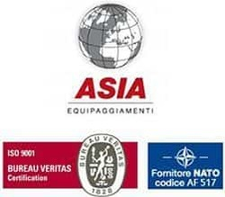

Presentazione
La ALMS MEDICAL S.r.l. nasce da uno sviluppo accurato nel settore "Elettromedicale" e da sinergie di professionisti, quali medici ed ingegneri, come società di distribuzione ed assistenza tecnica di dispositivi medici destinati agli interventi sull’uomo e alla diagnostica. Opera prevalentemente sul mercato nazionale, commercializza prodotti, ed il materiale accessorio e consumabile legato agli stessi, come apparecchi di anestesia, monitoraggio, incubatrici neonatali, defibrillatori, elettrocardiografi, holter, ed altre apparecchiature elettromedicali per diagnosi e terapia in tutti i settori della medicina (Generale, Rianimazione, Anestesia, Cardiologia, UTIC, Neonatologia, Neurologia), fornisce inoltre un servizio di assistenza con tecnici specializzati e formati presso le case madri. I Clienti dell’ALMS MEDICAL Srl sono principalmente tutti i corpi di Forze Armate, quali Aeronautica, Esercito, Marina Militare, reparti Repasan, e i corpi Speciali "Interforce", inoltre, Ospedali Pubblici e Privati, Case di Cura, Medici Specialisti, Enti pubblici, Laboratori privati polispecialistici, etc. Rappresentiamo diversi marchi, tra cui Weinmann, Progetti Medical, Mindray, Karrel, G.e. ecc, aziende che rispondono alle esigenze della clientela fornendo la professionalità e la competenza del proprio personale sia commerciale che tecnico.
L’ALMS MEDICAL Srl ha sempre seguito l’evoluzione del mercato adeguando la propria struttura alle molteplici esigenze / cambiamenti che si sono presentati nel mondo sanitario. L’ALMS MEDICAL Srl è il ramo della ormai conosciutissima ASIA EQUIPAGGIAMENTI SRL che ha ottenuto le certificazione di Qualità del proprio Sistema Aziendale che nel corso degli anni ha adeguato alle nuove Norme di settore. Attualmente è in possesso dei seguenti certificati di qualità l’UNI EN ISO 9001:2008 per il Sistema di Gestione per la Qualità e l’UNI EN ISO 13485:2012 specifica per i dispositivi medici.. Dal 2013 ha ottenuto la certificazione del Sistema di Gestione Sicurezza OHSAS 18001:2007. L’ALMS MEDICAL Srl dispone di personale qualificato, formato nel corso degli anni con corsi specifici indetti dalle Case Madri sia per quanto riguarda i prodotti che commercializza sia per l’assistenza degli stessi. La struttura della Asia Equipaggiamenti ed Alms Medical Srl, con Sede Legale ed operativa a Velletri ( Roma ) in via di Paganico, 28 – 00049 e filiale a Colleferro( Roma ) via Cimabue 40, comprende: n.1 Dirigente, n.1 Responsabile della Qualità, n.4 Venditori, n.4 tecnici specializzati nell’assistenza delle apparecchiature elettromedicali, n.1 Responsabile della progettazione, oltre al personale di segreteria ed amministrativo presente in azienda. L’ALMS MEDICAL SRL, inoltre dispone di un attrezzato laboratorio specialistico per le riparazioni delle apparecchiature che richiedono una manutenzione più approfondita e/o controlli specifici con apparecchiature da laboratorio.
 Tornando alla descrizione dell’ ASIA s.r.l., società pilota della ALMS MEDICA SRL che da anni si pregia di collaborare con numerosi Enti della Pubblica Amministrazione. In ragione di ciò, sia concesso informare che la Società si occupa, da anni, di approvvigionare prodotti, attrezzature, equipaggiamenti speciali per gli Enti governativi e non, quali: NSPA, Comando NATO J.F.C, Comando Generale dell'Arma di Carabinieri ivi comprese tutte le Unità Territoriali, Speciali, Mobili e Investigative, Ministero dell'Interno e unità dipendenti, Comando Generale della Guardia di Finanza e relativi EDR distaccati, Stato Maggiore Esercito, Stato Maggiore Aeronautica e Stato Maggiore Marina, includendo a questi tutta l'organizzazione operativa, logistica centrale e periferica, COI, COFS COMFOSE e Unità dipendenti, Protezione Civile, Comando Generale del Corpo delle Capitanerie di Porto – Guardia Costiera e Direzioni, Capitanerie e Uffici dipendenti. I recenti impieghi delle Unità operative nelle missioni "Fuori Area" - unite agli impegni in attività di ordine pubblico, di polizia giudiziaria in territorio nazionale e in acque territoriali/extraterritoriali - infatti, hanno condotto la Società a provvedere a considerevoli commesse di beni e servizi che hanno comportato l’incremento di ordinativi proprio in favore della Pubblica Amministrazione. La ditta – codice NATO AF517 e certificata ISO – riunisce i requisiti di cui all’art. 28 del TULPS, della normativa ITAR (Registro Nazionale dell’Imprese degli Armamenti) di cui alle legge 185/90 per il commercio di beni e servizi ad alto contenuto tecnologico in favore di Forze per le Operazioni Speciali, Forze Speciali, Grandi Unità, Direzioni Marittime, Forze di Polizia e di tutti gli Enti che operano in Italia e all' Estero. La ASIA S.r.l. è presente sul MEPA-Consip , con l’identificativo "ASIA SRL", per gli ordini d’acquisto di quanto inserito o per quanto si possa aggiornare a catalogo online anche su indicazione degli EDRC. La Società è in grado di attuare, inoltre, molteplici servizi inerenti la manutenzione, la riparazione di impianti tecnologici e infrastrutturali, ivi compresa l’installazione – quando necessaria – dei sistemi commercializzati. L’Azienda è distributore, in molti casi in esclusiva per l'Italia, di molteplici brand internazionali a cui si aggiungono i numerosi marchi a matrice Stati Uniti per i prodotti chimici, che superano le norme MIL STD e PRF, idonei a gli interventi preventivi e correttivi su armi, sistemi d'arma, apparecchiature ad alto contenuto tecnologico. Tra le collaborazioni più efficaci con l’AD, sia concesso, informare che la ASIA S.r.l. già dall'anno 2007 ha iniziato una proficua distribuzione alle Forze Speciali di svariati dispositivi I.F.F. identification friend and foe il cui impiego – alla luce dei recenti impegni, soprattutto al di fuori del territorio nazionale – ha enormemente aumentato le condizioni di sicurezza degli operatori impiegati sul terreno sia per ciò che attiene l'unità minima della "coppia", sia per quanto riguarda i distaccamenti operativi motorizzati e/o meccanizzati e/o su velivolo. Inoltre, quale contributo più proficuo nel settore logistico, questa Società si pregia di innumerevoli forniture di contenitori full rugged per quanto attiene il trasporto e lo stoccaggio di apparecchiature ad alto contenuto tecnologico e sistemi d'arma a norme MIL e IATA. L’impresa è anche specializzata per quanto concerne le pavimentazioni ad assorbimento energetico degli impatti riguardanti esplosioni di mine, all'interno di mezzi blindati. In tale quadro, si chiede di valutare la possibilità di inserire questa Società nell’elenco delle aziende che potranno essere da contattate per indagini di mercato, pubblici incanti, richieste di offerta su piattaforma MEPA e gare di appalto in genere.
Prodotti in Portfolio
- Segnalatori termici e strumenti optoelettronici per uso individuale e per mezzi natanti
- Cases, torce tattiche e sistemi di illuminazione campali
- Pavimentazioni ultraresistenti specifiche per altissimi carichi
- Pavimentazioni rugged per tende,Hangar,Aree Apron, Landing Zone
- Pavimentazioni modulari e arrotolabili
- Pavimentazione galleggiante uso nautico
- Vest di galleggiamento balistici e tattici, dispositivi di protezione individuale balistici
- Giubbotti Balistici,Elmetti Balistici,Piastre Balistiche, Giubbotti Galleggianti Balistici
- Piastre balistiche e sistemi di protezione balistica per aeromobili e velivoli
- Equipaggiamento individuale, buffetteria, Jacket, borse di trasporto
- Sistemi di mascheramento multi spettrale, individuale,per veicoli, per posti comando
- Inibitori di Frequenze Radio, Jammer per la sicurezza delle comunicazioni
- Sistemi difensivi passivi, barriere auto difensive
- Sacche stagne, mute, accessori nautica, canoe, cayak
- Apparecchiature video rugged
- Sistemi di a e HID Generatori di energia solare , Sistemi ad energia solare,campali, portatili, carellabili
- Sistemi per ZTE, Landing zone per elicotteri.
- Pavimentazioni speciali per zone militari, industrie, posti commando, ZAE, hangar, autorimesse, officine,
- Rastrelliere, Armadi per lo stoccaggio armi, Allestimento Container Armeria, Armeria Campale
- Intimo e Abbigliamento termico per climi rigidi
- Prodotti chimici a specifica MIL, manutenzione sistemi d’arma, attrezzature speciali e banchi per armerie, hangar, officine, laboratori)
- Sistemi di aspirazione fumi, vapori, polveri, bracci aspiranti, gruppi di filtrazione ecc.
- Equipaggiamento antiriot, training item per la Polizia Giudiziaria, estintori speciali individuali e di reparto
- Sistemi di recupero aeromobili e velivoli
- Contenitori speciali per trasporto munizionamento
- Sistemi per la visione notturna
- Dispositivi navali, dissuasori, ripetitori acustici
- Cargo Net, Recovery Net, Lifting Net, 9G Net Quick Release per elicotteri
- Sistemi di incenerimento e smaltimento munizioni, trasportabili e campali
Partner
- VENTILATORI DA TRASPORTO
- ASPIRATORI CHIRURGICI
- BORSE/ZAINI DI EMERGENZA
- ACCESSORI GAS MEDICALI
- ECOGRAFI NUOVI E RIGENERATI
- SONDE NUOVE E RIGENERATE (ANCHE DI ALTRE MARCHE)
- CARRELLI RACCOLTA E TRASPORTO RIFIUTI pag. 67 CARRELLI EMERGENZA
- CARRELLI MEDICAZIONE
- CARRELLI MULTIFUNZIONE
- CARRELLI DISTRIBUZIONE FARMACI
- DOSAGGIO FARMACI
- ARREDI PER SALA OPERATORIA
- CARRELLI PORTALASTRE E PORTACARTELLE CLINICHE
- CARRELLI RACCOLTA BIANCHERIA SPORCA
- CARRELLI PER LA RACCOLTA E DISTRIBUZIONE BIANCHERIA
- CARRELLI PER TRASPORTO CONTAINERS E UNIVERSALE
- CARRELLI DI SERVIZIO
- SISTEMA COMPONIBILE ICARUS
- ARREDI AMBULATORIALI
- ARMADI
- CARRELLI PULIZIA
- CARRELLI PER IL TRASPORTO DI MATERIALI VARI
- ARREDI UFFICIO
- ARREDI DEGENZA